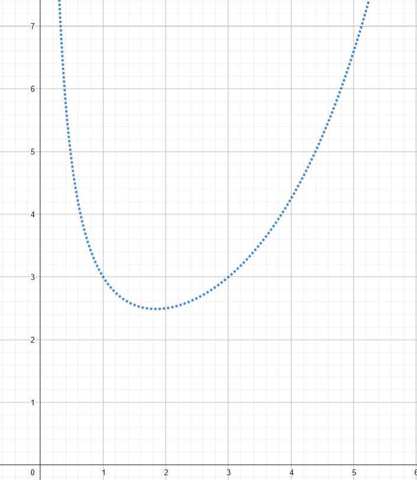

Uma sequência é caracterizada por uma ordem lógica de números ou letras:
a1, a2, a3, ..., an
Cada 'ax' é chamado de termo e o número variando de 1 a 'n' é a posição do termo.
Para representar uma sequência a seguinte notação é utilizada:
an = {a1, a2, a3, ..., an}.
O an é o termo geral da sequência; é a equação que mostra como a sequência se comporta em função de n. Por exemplo:
an = { 1, 1⁄2 , 1⁄4 , 1⁄8 , ... , 1⁄2n }
Nesta sequência, cada termo é dado pela fórmula an = 1⁄2n, que representa o comportamento da sequência como um todo. Esta expressão é a nossa equação geral da sequência.
Portanto, o an é igual a 1⁄2n, assim a partir dessa lei de formação é possível determinar qualquer termo de acordo com sua posição n. Com isso, em C2 estudaremos sequência com n tendendo ao infinito, o que implica que sempre haverá um termo sucessor (an+1).
Começaremos por limites, como estamos trabalhando com sequências infinitas principalmente com o objetivo de descobrir se ela tem um fim, tentando determinar sua convergência.
Para continuarmos é necessário ter conhecimento prévio sobre cálculo 1, pois utilizaremos ferramentas como: Limites, derivados e integrais.
A convergência é determinada calculando o limite do termo geral com n tendendo ao infinito, sendo que, caso o Lim seja um número que pertence ao numeros reais entao classificamos essa sequência como convergente.
Pela definição, temos:
Se Limn->∞an = L, então an converge para L. Caso contrario, essa sequência diverge.
a) {1⁄2n}∞n = 1 = {1 , 1⁄2 , 1⁄4 , ... , 1⁄2n}
Portanto, essa sequência converge converge para 0.

Note que, à medida que n aumenta, o valor de Y se aproxima cada vez mais de 0.
b) {2n⁄n+1⁄n}∞n=1 = {3, 5⁄2, 9⁄3, ...}
Portanto, a sequência diverge.
Note que, à medida que n aumenta, o valor de Y não converge para um ponto.
Dada uma sequência qualquer an, caso an+1 ≤ an ∀n, então dizemos que é uma sequência decrescente.
Dada uma sequência qualquer an, caso an+1 ≥ an ∀n, então dizemos que é uma sequência decrescente.
Sequência monótona: Quando uma sequência pode ser classificada como crescente ou decrescente, chamamos essa sequência de monótona.
Exercicios